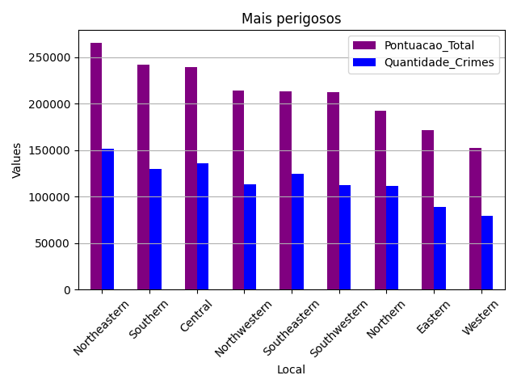
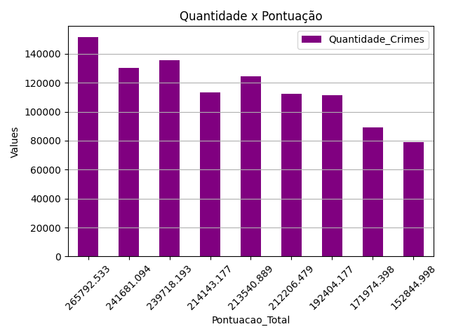
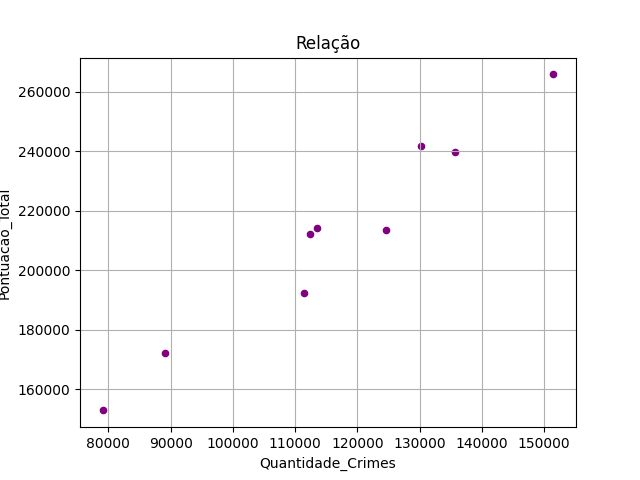

Hypothesis 1: Is the most dangerous district the one with the highest number of occurrences?
Hypothesis
Is the most dangerous district the one with the highest number of occurrences?
Motivation
The number of occurrences is often associated with the dangerousness of a location. In this context, Hypothesis 1 aims to analyze and conjecture which districts are the most dangerous based on the number of occurrences and the severity level of each occurrence.
Warning
The studies carried out here are purely superficial. Due to the lack of experience with statistical or probabilistic approaches, the analysis was conducted with the aim of sparking the reader’s interest in the hypotheses discussed.
About the Analysis:
The analysis of this hypothesis focuses on normalizing the data obtained by counting the number of each type of occurrence and then applying a standard weighting to make the final scores more coherent. Specifically, occurrences with a ‘Medium’ level should have a lower weight than those with a ‘High’ level. For normalization, a logarithmic method was used, as it balances out data that is spread across a wide range. After calculating weights for each occurrence level, scores are aggregated by district and ranked in descending order.
Types of Graphs:
Three graphs were used in this analysis: 1. Bar Chart: Score vs. District - visualizing the most dangerous districts. 2. Bar Chart: Occurrence Count vs. Score - to explore the hypothesis title. 3. Scatter Plot: Score vs. Occurrence Count - showing a linear trend in score growth.
  Conclusion:
Based on the visualization from Graph 1, we assume that the analysis is incorrect. As we can see, the second most dangerous state (in terms of score), despite having a higher score than the third place, has a lower number of occurrences. However, it is important to emphasize the possible relationship between quantity and score. The growth trend observed in Graph 2 and Graph 3 (scatter plot) tends to indicate that with an increase in the number of crimes, the score also tends to rise proportionally.